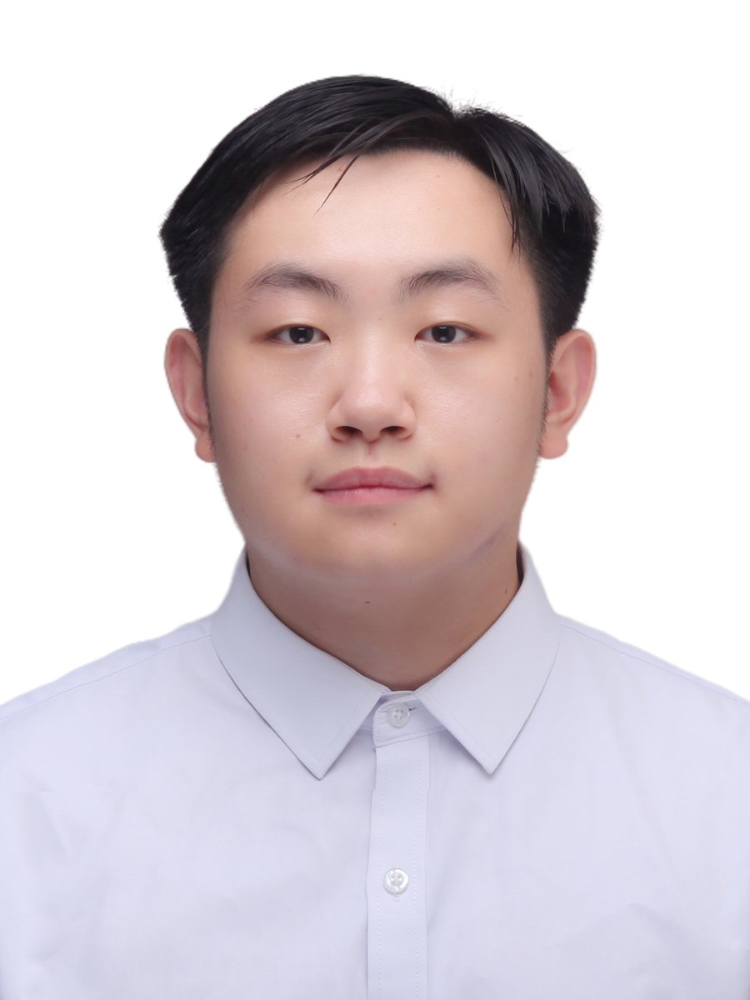
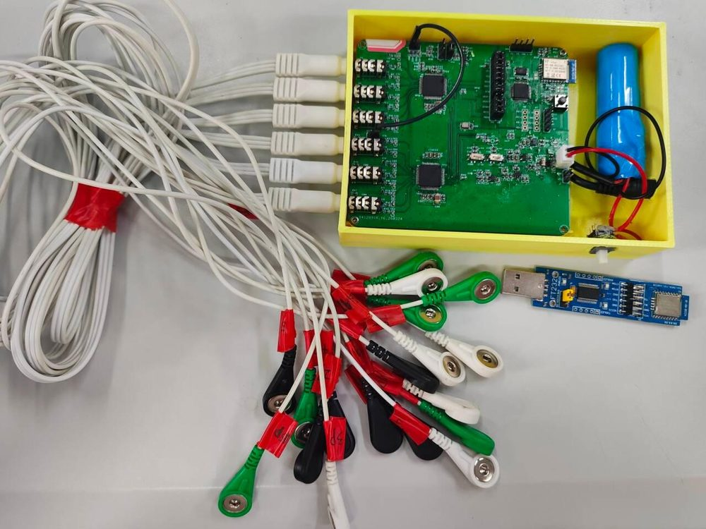
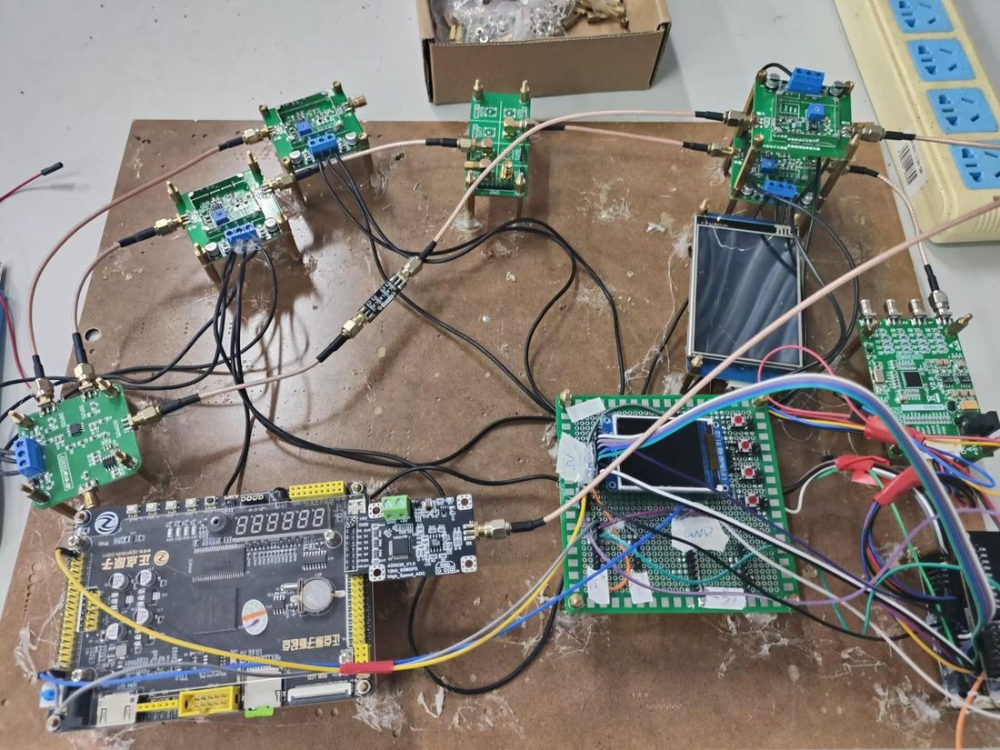
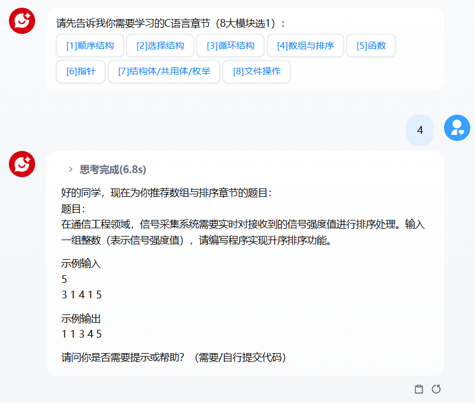
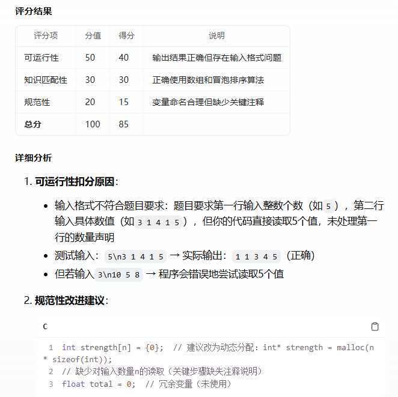
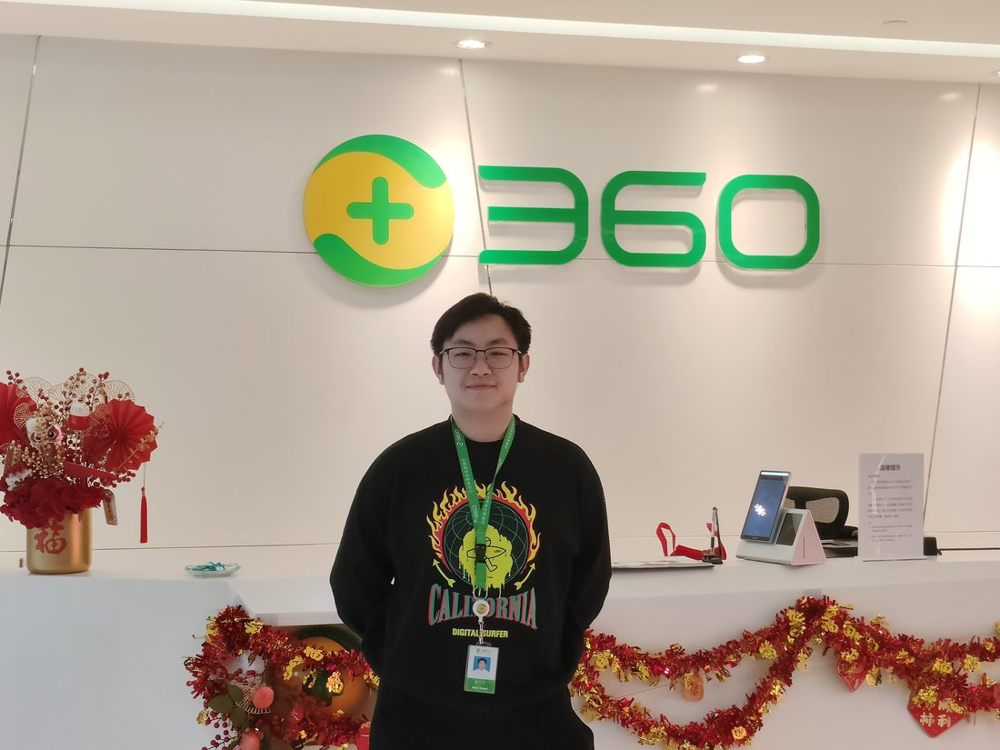
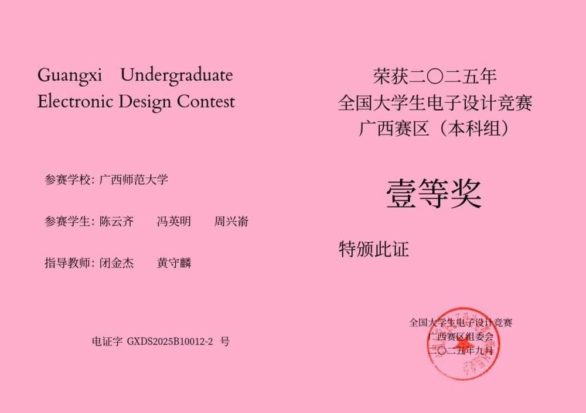
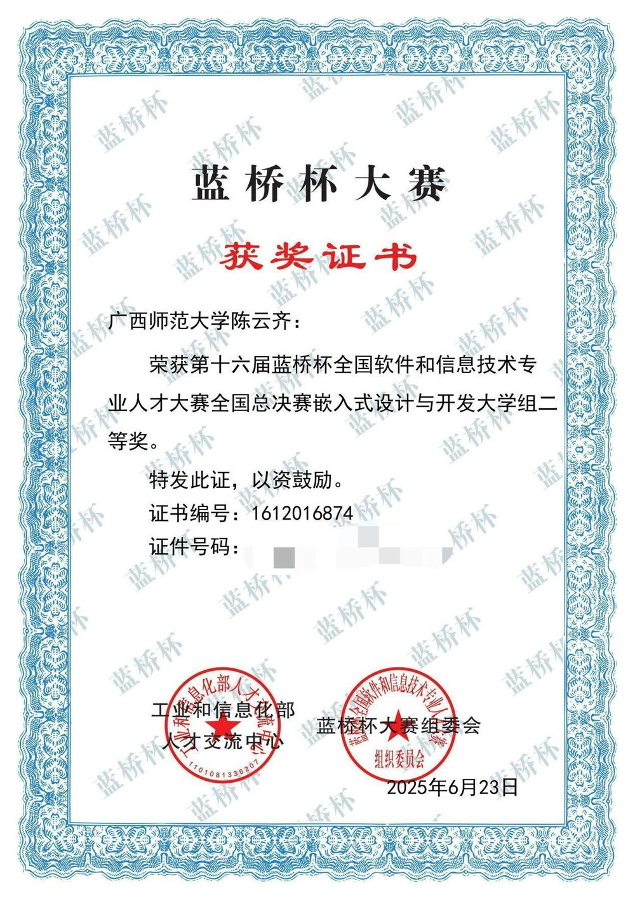
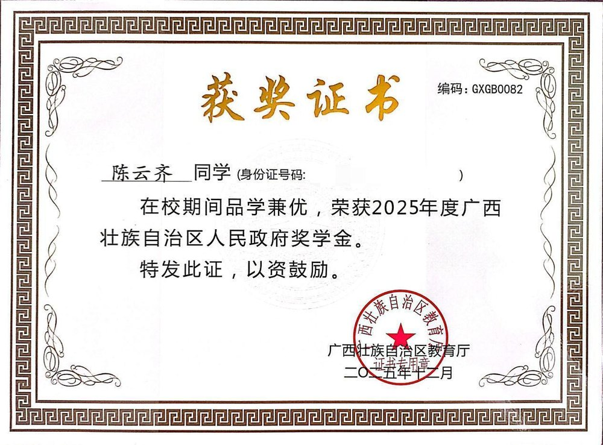
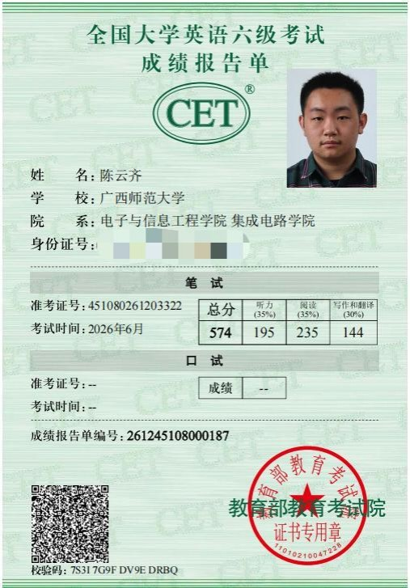

上海科技大学/电子科学与技术 · 学术硕士
2027.09 入学- 推免录取，保研排名全院第四。

人工智能专业本科生，已推免至上海科技大学电子科学与技术专业攻读学术硕士（保研排名全院第四）。 具备 STM32 / FPGA 软硬件协同开发与信号处理经验，关注超声脑机接口电路与被动声学定位算法。
2026 年国家奖学金、五好学生标兵奖学金。
自治区级大学生创新训练项目

FPGA + STM32 双核架构

企业项目
教改论文 · 《计算机教育》录用


荣耀儿童手表 · 基于 RTOS 的 AI 应用

国家奖学金；五好学生标兵奖学金
广西壮族自治区人民政府奖学金
全国大学生电子设计竞赛 省级一等奖
蓝桥杯 全国二等奖 ×2（嵌入式设计与开发 / 物联网设计与开发）
全国大学生英语竞赛 C 类 一等奖
广西高校大学生翻译大赛 特等奖




邮箱 yunqi_chen_frank@163.com · 微信 BZZylm · QQ 664009020